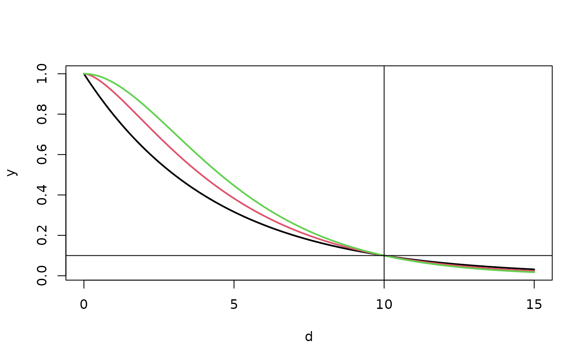

Exponential.RdFunctional form of covariance function assuming the argument is a
distance between locations. As they are defined here, they are in
fact correlation functions. To set the marginal variance (sill)
parameter, use the sigma argument in mKrig or Krig.
To set the nugget variance, use te tau2 argument in
mKrig or Krig.
Exponential(d, range = 1, alpha = 1/range, phi=1.0,theta = NULL)
Matern(d , range = 1,alpha=1/range, smoothness = 0.5,
nu= smoothness, phi=1.0)
Matern.cor.to.range(d, nu, cor.target=.5, guess=NULL,...)
RadialBasis(d,M,dimension, derivative = 0)Vector of distances or for Matern.cor.to.range just a single distance.
Range parameter default is one. Note that the scale can also be specified through the "aRange" scaling argument used in fields covariance functions)
1/range
Same as alpha
This parameter option is added to be compatible with older
versions of fields and refers to the marginal variance of the process.
e.g. phi* exp( -d/aRange) is the exponential covariance for points
separated by distance and range aRange. Throughout fields this parameter
is equivalent to sigma and it recommended that sigma be used. If one is
simulating random fields. See the help on sim.rf for
more details.
Smoothness parameter in Matern. Controls the number of derivatives in the process. Default is 1/2 corresponding to an exponential covariance.
Same as smoothness
Interpreted as a spline M is the order of the derivatives in the penalty.
Dimension of function
Correlation used to match the range parameter. Default is .5.
An optional starting guess for solution. This should not be needed.
If greater than zero finds the first derivative of this function.
Additional arguments to pass to the bisection search function.
Exponential:
exp( -d/range)
Matern:
con*(d**nu) * besselK(d , nu )
Matern covariance function transcribed from Stein's book page 31 nu==smoothness, alpha == 1/range
GeoR parameters map to kappa==smoothness and phi == range check for negative distances
con is a constant that normalizes the expression to be 1.0 when d=0.
Matern.cor.to.range:
This function is useful to find Matern covariance parameters that are
comparable for different smoothness parameters. Given a distance d,
smoothness nu, target correlation cor.target and
range aRange, this function determines numerically the value of
aRange so that
Matern( d, range=aRange, nu=nu) == cor.target
See the example for how this might be used.
Radial basis functions:
C.m,d r**(2m-d) d- odd
C.m,d r**(2m-d)ln(r) d-even
where C.m.d is a constant based on spline theory and r is the radial distance
between points. See radbas.constant for the computation of the constant.
For the covariance functions: a vector of covariances.
For Matern.cor.to.range: the value of the range parameter.
Stein, M.L. (1999) Statistical Interpolation of Spatial Data: Some Theory for Kriging. Springer, New York.
stationary.cov, stationary.image.cov, Wendland,stationary.taper.cov rad.cov
# a Matern correlation function
d<- seq( 0,10,,200)
y<- Matern( d, range=1.5, smoothness=1.0)
plot( d,y, type="l")
# Several Materns of different smoothness with a similar correlation
# range
# find ranges for nu = .5, 1.0 and 2.0
# where the correlation drops to .1 at a distance of 10 units.
r1<- Matern.cor.to.range( 10, nu=.5, cor.target=.1)
r2<- Matern.cor.to.range( 10, nu=1.0, cor.target=.1)
r3<- Matern.cor.to.range( 10, nu=2.0, cor.target=.1)
# note that these equivalent ranges
# with respect to this correlation length are quite different
# due the different smoothness parameters.
d<- seq( 0, 15,,200)
y<- cbind( Matern( d, range=r1, nu=.5),
Matern( d, range=r2, nu=1.0),
Matern( d, range=r3, nu=2.0))
matplot( d, y, type="l", lty=1, lwd=2)
xline( 10)
yline( .1)
